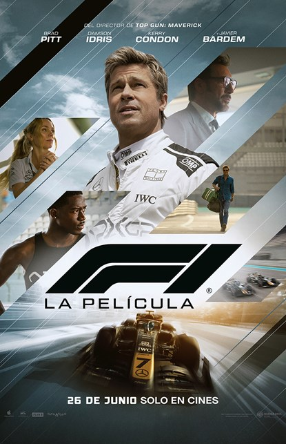
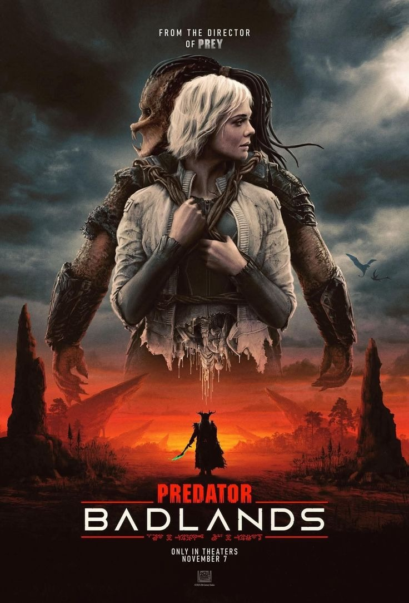
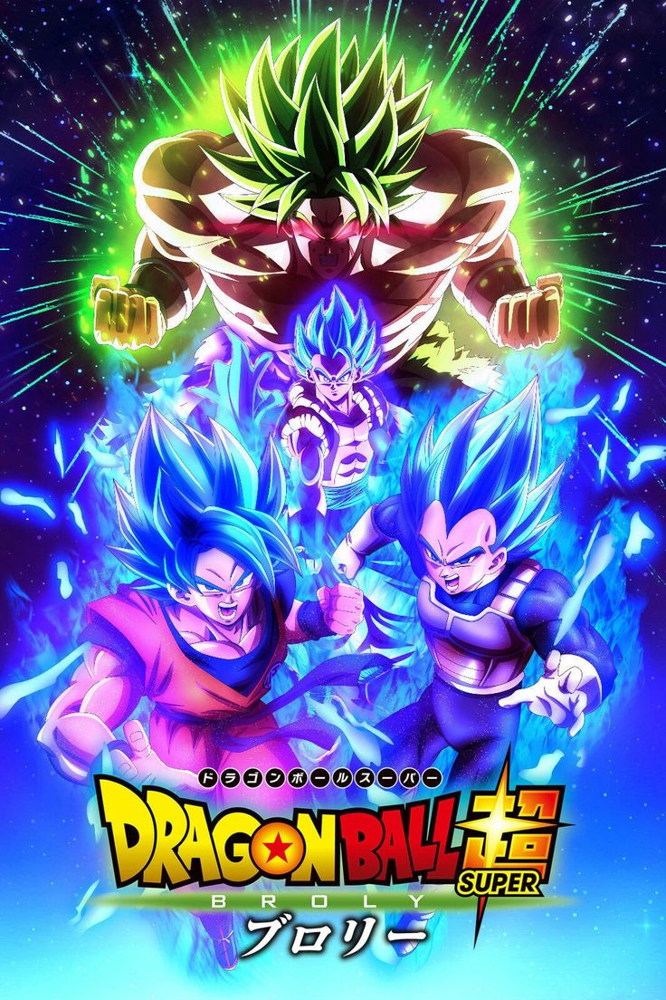
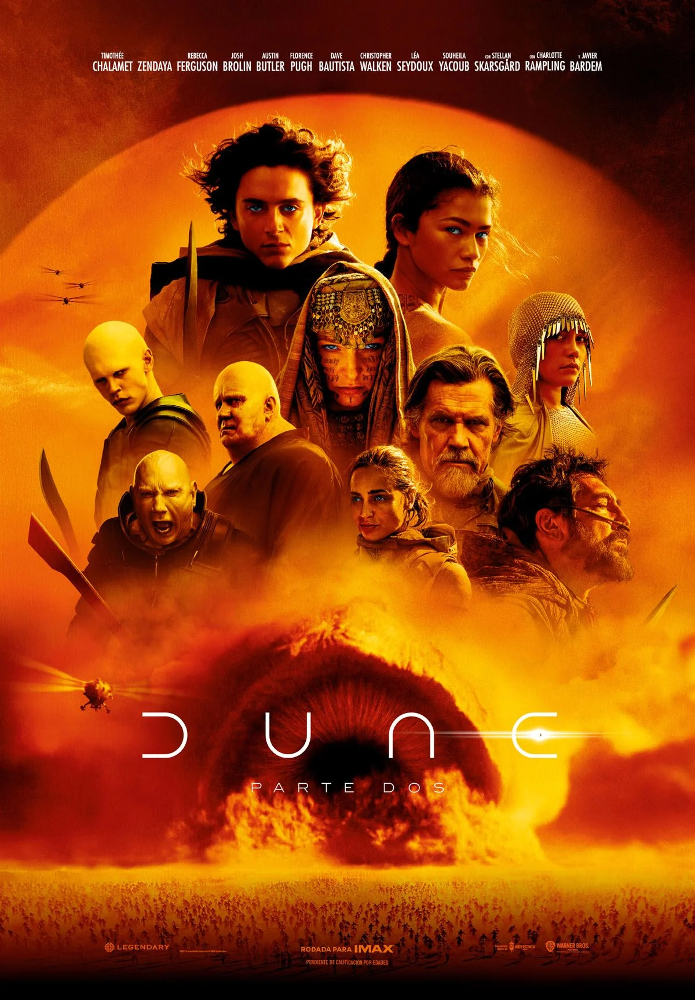
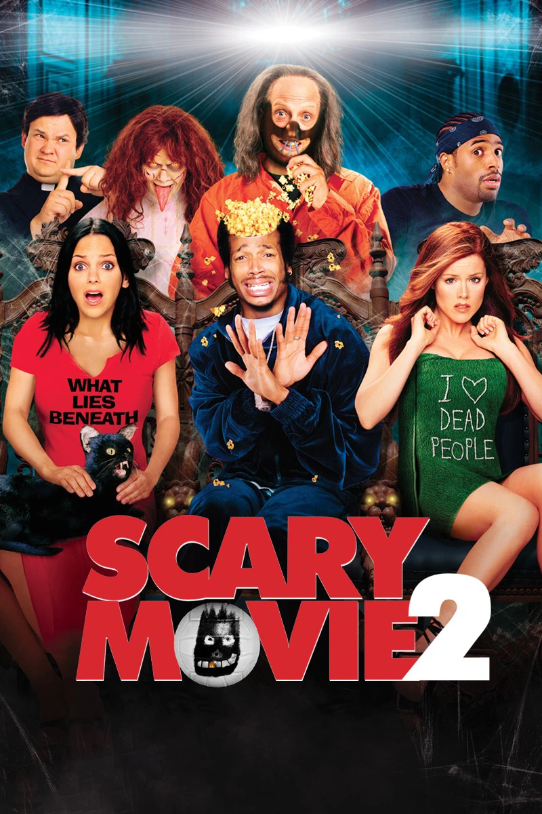
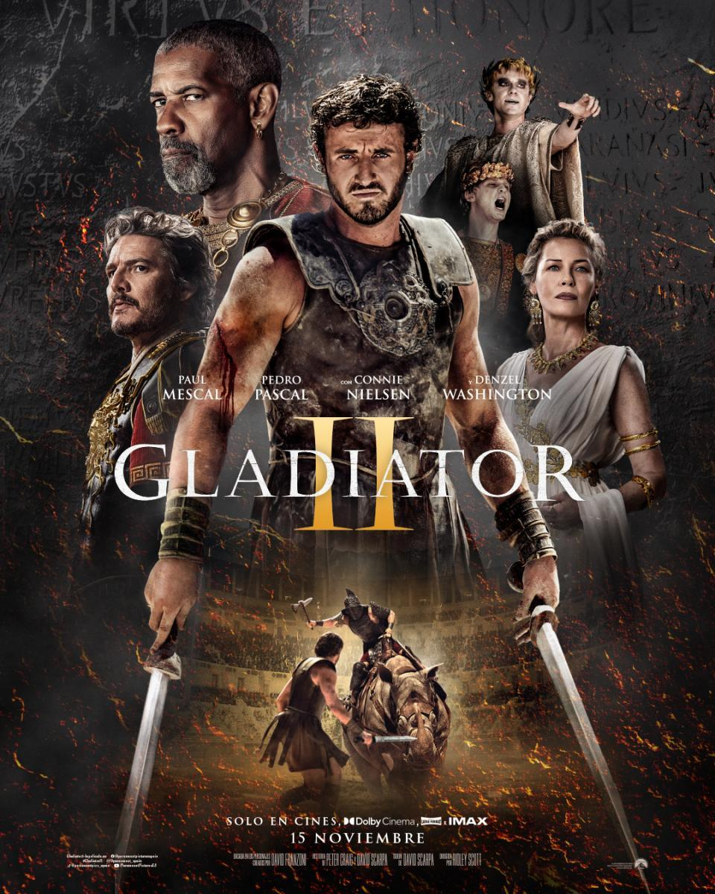
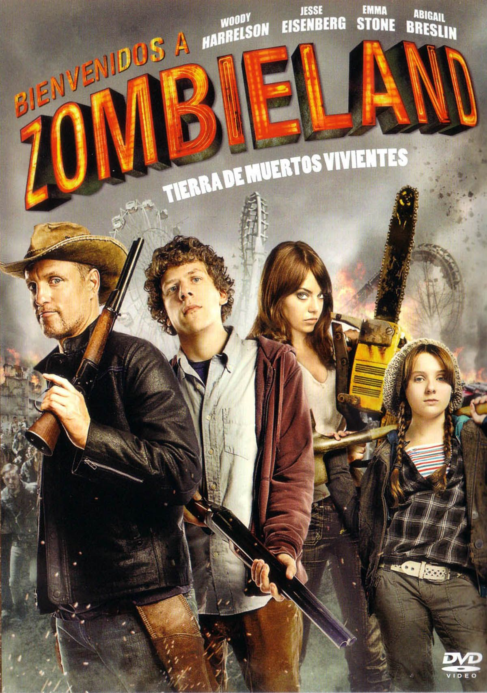
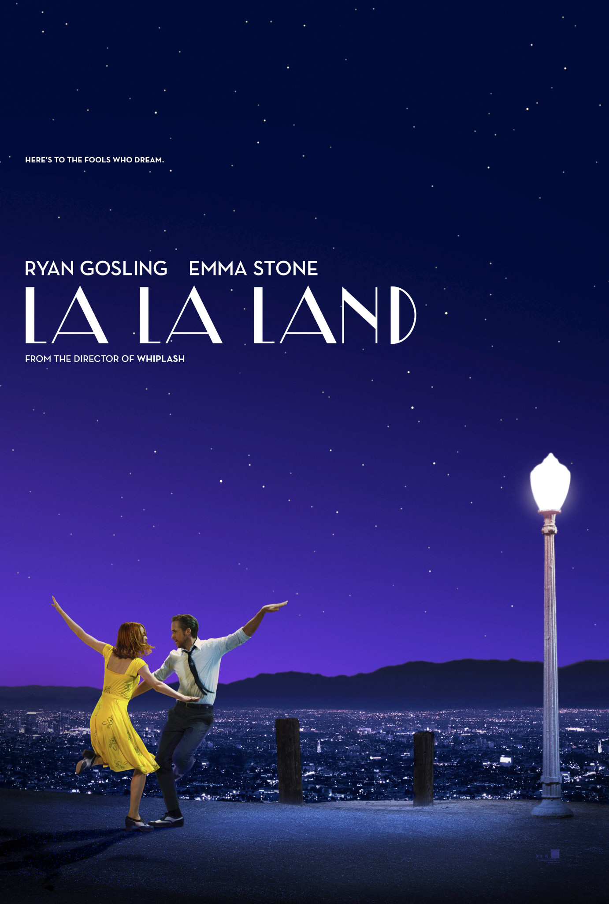
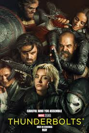

URUGUAYO EN EL CINE
El director uruguayo Fede Álvarez continúa consolidando
su lugar en Hollywood con su más reciente desafío: Alien: Romulus, la nueva
entrega de la icónica saga de ciencia ficción y terror. Nacido en Montevideo
en 1978, Álvarez comenzó su carrera realizando cortometrajes hasta que, en
2009, su corto Ataque de Pánico! se volvió viral y captó la atención de los
grandes estudios estadounidenses.
Desde entonces, su estilo visual, marcado
por la tensión, el suspenso y el uso inteligente de los efectos especiales,
lo ha convertido en uno de los directores latinoamericanos más destacados de la industria.
Tras dirigir el aclamado remake de Evil Dead (2013) y el exitoso thriller No
Respires (2016), Álvarez ahora enfrenta el reto de revitalizar una de las
franquicias más queridas del cine. Con Alien: Romulus, promete llevar a la
saga un enfoque fresco y contemporáneo, respetando la esencia de terror y
claustrofobia que la caracteriza.
Su trayectoria demuestra cómo el talento uruguayo puede abrirse camino en
el competitivo mundo del cine internacional, inspirando a nuevas generaciones
de realizadores en la región.